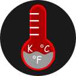

TempConverter 
Conversor de unidades de Temperatura Celsius, Farenheith y Kelvin Creado con JQuery Mobile, HTML5 y CSS3
Version 0.1 Mozilla Public License 2.0Autor: Andrés Godínez, salvadoreño, estudiante de Ingeniería de Sistemas Informáticos, usuario de GNU/Linux y amante de la programación :D